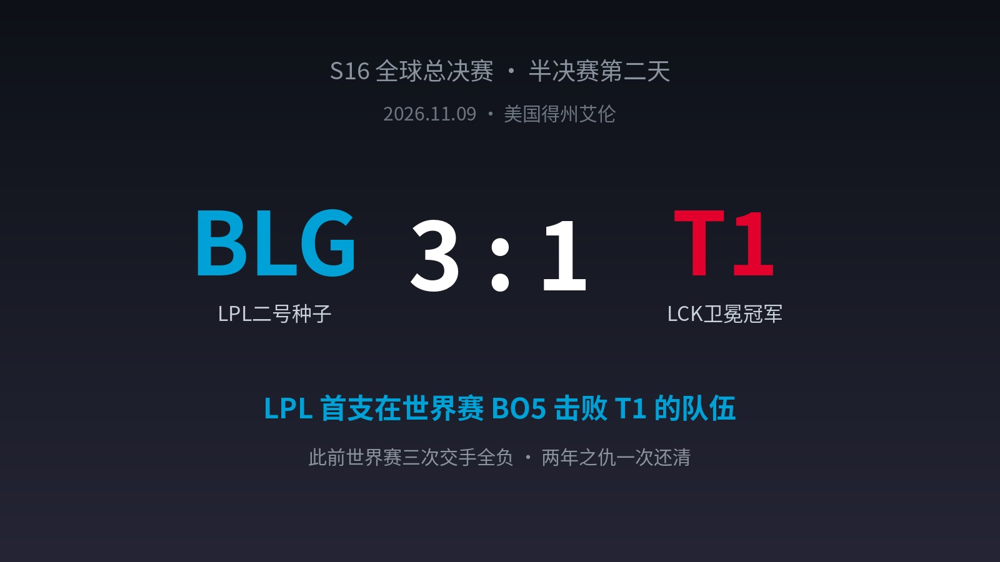
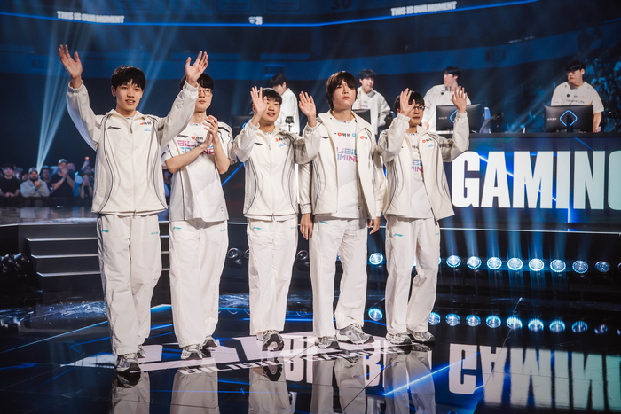
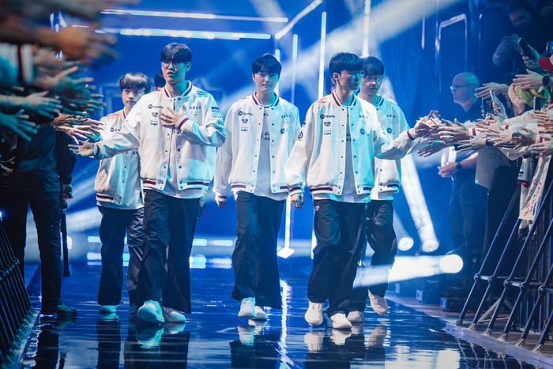
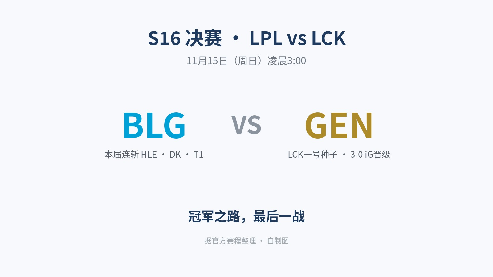

▲ 比赛结果（自制图）
三天前，Faker在赛后采访里说："BLG有争冠实力，不过很可惜，他们半决赛碰到了我们。"还留下一句"如果未来是你的，那么证明给我看"。
今天，BLG用一场3-1，把这两句话原样奉还。
据人民电竞，这是世界赛历史上，LPL队伍首次在BO5中战胜T1。"BLG翻盘T1""Bin太有纪律了"冲上热搜。两年前的今天，T1正是踩着BLG捧起第五座冠军奖杯；两年后的同一个月，BLG亲手把这段历史改写。

▲ BLG赛后向观众致意（图源：Riot Games）
01 两年之仇，一次还清
这魔咒压了BLG整整两年：世界赛三次交手全负——S13瑞士轮0-2、S14瑞士轮0-1、S14决赛2-3。T1在世界赛BO5里，对LPL队伍更是保持全胜。
赛前Viper放话："一定要打破在世界赛不胜T1的魔咒。"
现在，宣言兑现，魔咒清零。
02 四局复盘：逆风翻盘，一鼓作气
第一局，开局就挨闷棍：3分钟T1中野下路包夹，Keria的洛收走一血。但BLG的回应是教科书级的——15分钟Xun的纳亚菲利抢下峡谷先锋，Knight奥莉安娜完美大招双杀；27分钟Bin的奎桑提主宰团战，1换4；29分钟ON的诺提勒斯控到不能自理，30分钟推平。MVP：Xun。
第二局，T1拿出了世界赛顶级的韧性：Oner的李青偷下大龙，Doran的奥拉夫两度双杀，31分钟团灭BLG扳回一城。这一局的T1，还是那个"给点机会就能翻盘"的T1。
第三局是整场的转折点：27分钟Xun的潘森大招完美绕后，32分钟小龙团拿下龙魂、果断追击，Viper的伊泽瑞尔双杀，2换4顺势收掉大龙；35分钟Knight的岩雀关键控制锁死战局，赛点到手。
第四局，BLG没有再给卫冕冠军任何机会，一鼓作气终结系列赛。

▲ T1赛前亮相（图源：Riot Games）
03 每一句狠话，都有人接
这场半决赛最有味道的地方在于：赛前的每句狠话，都被接住了。
Faker说"BLG有争冠实力，可惜碰到了我们"——现在遗憾的是T1。Faker说"如果未来是你的，那么证明给我看"——BLG用3-1证明了。
而Bin整轮系列赛的稳定发挥，让"Bin太有纪律了"成了新热搜——曾经那个容易上头的世一上，如今是全队最稳的一环。
04 决赛：对面的墙，叫GEN
另一边，GEN昨天3-0横扫iG——iG的奇迹之旅止步四强，而Chovy终于在他职业生涯的第十年，第一次踏进决赛。

▲ 决赛对阵（自制图，据官方赛程整理）
11月15日（周日）凌晨3点，BLG对GEN。值得一提的是，BLG本届世界赛的晋级之路就是一部"LPL杀手"实录：瑞士轮淘汰MSI冠军HLE，八强3-0横扫EWC冠军DK，半决赛掀翻卫冕冠军T1——三支LCK强队，全栽在这条晋级路上。
现在，只剩最后一堵墙。LPL赛区能否时隔两年再夺S赛冠军，就看这一场了。
评论区聊聊：决赛你押谁？BLG的复仇终章，还是GEN与Chovy的十年圆梦？
—— 11月15日凌晨3点，不见不散 ——
信息来源：人民电竞、英雄联盟赛事官方战报、BLG电子竞技俱乐部官微、sportsseoul达拉斯现场报道、懂球帝、虎扑等公开报道。比赛照片图源Riot Games/赛事官方，比分卡与对阵卡为自制图。